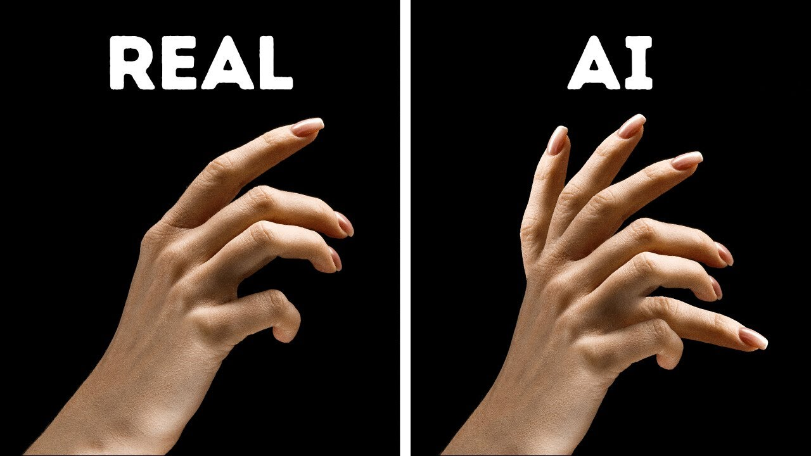

AI-generated media is advancing at a breathtaking pace — but it is far from perfect. Understanding what AI still cannot do is just as important as understanding what it can, both for critically evaluating synthetic content and for recognizing the genuine boundaries that separate machine creation from human creativity.
Why Limitations Matter
When discussing AI-generated media, there is a natural tendency to focus on what these systems can do — the stunning images, convincing voices, and coherent articles they produce. But understanding their limitations is equally important, for two reasons. First, limitations give us practical tools for identifying AI-generated content. Second, they help us maintain a realistic picture of what AI is and is not, rather than treating it as an all-powerful black box.
These limitations are not minor edge cases. They are structural — built into the way machine learning models work — and they affect every type of AI-generated media to varying degrees. Even as models improve, some of these limitations persist and may never be fully resolved.

Visual Limitations
Despite remarkable progress, AI image and video generators still struggle with a consistent set of visual challenges. These are not random errors — they reflect specific weaknesses in how models learn and represent visual information:
Hands and Fingers
AI models consistently struggle to generate anatomically correct hands — producing extra fingers, merged digits, or unnatural proportions.
Readable Text
Text embedded in AI-generated images is almost always garbled, illegible, or nonsensical — a tell-tale sign of AI generation.
Consistent Lighting
Light sources may be inconsistent within a single image — shadows falling in impossible directions, or lighting that doesn't match the environment.
Reflections and Symmetry
Reflective surfaces, mirrors, and bilateral symmetry are frequently distorted or incoherent in AI-generated images.
Background elements are another persistent weakness. Objects in the background of AI images often repeat, warp, or blur in unnatural ways. Fine details — the weave of fabric, the grain of wood, the texture of skin at high magnification — often show a smooth, artificial quality that does not match the complexity of real-world surfaces.
Factual and Reasoning Limitations
AI text generation models — large language models — have a well-documented tendency to produce confident but incorrect information, a phenomenon called hallucination. The model generates plausible-sounding text based on statistical patterns, but it has no mechanism for verifying that the information it produces is actually true. It can invent citations, fabricate statistics, create fictional events, and attribute false quotes to real people — all in flawless prose.
Beyond factual accuracy, LLMs also struggle with genuine reasoning. They can perform many reasoning-like tasks through pattern matching, but they do not reason the way humans do. Complex logical problems, multi-step mathematical proofs, and tasks requiring common sense about the physical world frequently expose the limits of what appears to be sophisticated intelligence.
A language model does not know what it does not know. It generates what is statistically plausible, not what is verifiably true — and it has no awareness of the difference.
— Limitations of Generative AI, Computational Linguistics ResearchAudio and Video Limitations
AI audio and video generation, while impressive, carry their own distinct limitations. In audio, cloned voices often exhibit subtle artifacts — a slight metallic quality, unnatural pauses, or an absence of the ambient noise and natural variation that characterizes real recordings. Emotional expression in synthetic speech can feel flat or slightly mismatched to the content.
In video, temporal consistency — maintaining coherence across frames — remains a major challenge. Objects may change shape subtly between frames, hair and clothing may behave unnaturally, and the transition between different parts of a scene may show artifacts as the model attempts to maintain continuity. Longer videos amplify these inconsistencies, as small errors accumulate over time.
-
1
Temporal Drift
Small inconsistencies between frames accumulate in longer video clips, causing objects to shift or morph in unnatural ways over time.
-
2
Physics Violations
AI video may show objects behaving in physically impossible ways — liquids flowing upward, cloth rippling without wind, or rigid objects deforming.
-
3
Audio-Visual Sync
When audio and video are generated separately and combined, synchronization between lip movements and speech can break down, especially in longer clips.
-
4
Length Constraints
Current AI video models struggle to maintain quality and coherence in clips longer than a minute, making long-form synthetic video rare and difficult to produce convincingly.
Ethical and Social Limitations
Beyond technical flaws, AI media generation faces significant ethical and social limitations that are not easily resolved by better models. Because training data reflects the biases of the world it was collected from, AI-generated media can perpetuate and amplify those biases — producing images that underrepresent certain groups, text that reflects cultural blind spots, or audio that handles certain languages and accents less accurately than others.
Consent remains a fundamental unsolved problem. Current AI systems can replicate the likeness, voice, and writing style of real people without their knowledge or permission, using training data that may have been collected without consent. No technical improvement to the model itself resolves this ethical issue — it requires policy, law, and social norms to address.
AI models inherit the biases present in their training data. This means AI-generated media may reflect and reinforce existing social inequalities, even when no one explicitly programs this outcome. Awareness of this limitation is essential for anyone using or evaluating AI-generated content.
Technical Constraints
AI media generation also faces real technical constraints that limit its practical application. Training large models requires enormous amounts of computational power, specialized hardware, and energy — making it accessible only to well-resourced organizations. Running these models at scale is expensive, which is why many AI tools operate on subscription or usage-based pricing.
Context length limits in language models mean that they can only "see" a certain amount of text at once. For very long documents or complex multi-step tasks, they may lose track of earlier information, leading to contradictions or inconsistencies. Similarly, image and video models have constraints on resolution and output length that require significant computational resources to overcome.
What We've Learned
AI media generation is powerful but imperfect. Visual models struggle with hands, readable text, consistent lighting, and realistic backgrounds. Language models generate confident but sometimes false information, without the ability to verify their own outputs. Audio and video models face temporal consistency challenges, physics violations, and synchronization issues. And across all types, AI generation inherits biases from its training data and operates without the ethical guardrails of genuine understanding or consent.
These limitations are not just technical footnotes — they are practical tools for media literacy. Knowing where AI fails gives us specific things to look for when evaluating media we are uncertain about. And understanding the structural reasons for these limitations helps us maintain a realistic and critically informed perspective on a technology that is advancing rapidly, but that remains — in fundamental ways — very different from human creativity and judgment.
AI limitations are your detection toolkit. Distorted hands, garbled text, unnatural blinking, metallic voices, and over-smooth prose — these are the fingerprints that AI leaves behind. Learn them, and you will be harder to deceive.